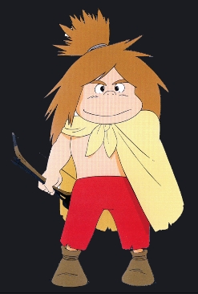
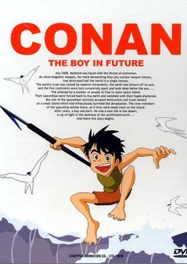

==============================================
==============================================
류현진
추신수
임창용
---------------------------------
직원명
---------------------------------
big data 란...
네트워크 상에서 발생하는 방대한 데이터를 말한다.
---------------------------------


---------------------------------
두려움은 포기의 전 단계 증상이다.
긴장감은 발전의 전 단계 증상이다.